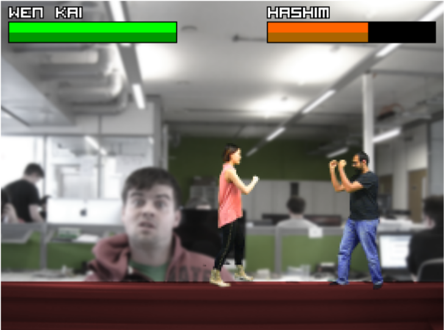
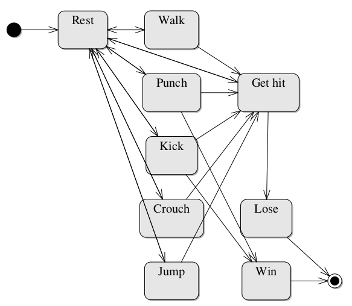
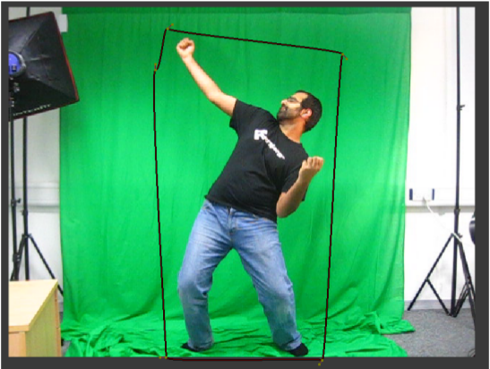
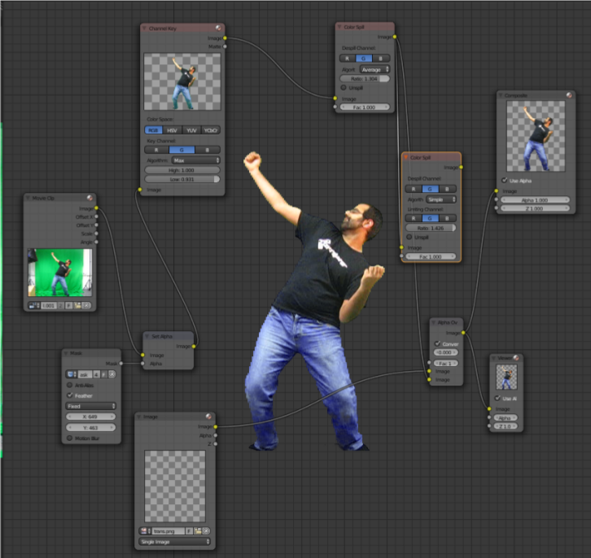
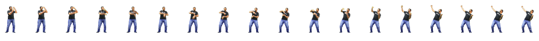

MATT THOMPSON
Create a live-action fighting game with your friends as characters
Thu Jul 14th 2016

Two of my friends duke it out, Mortal Kombat-style
Introduction
In this blog post, I describe the techniques you can use to develop a simple “beat-em-up”-style game that runs on Linux, Mac OSX and Windows. In this game, two characters compete in a fight where they can punch or kick each other to reduce their opponent’s health. They can also perform evasive manoeuvres by crouching and jumping.
Instead of drawing or modelling the characters to put in the game, I used live-action footage of some of my friends punching, jumping, etc in real life. I filmed their actions in front of a green screen, which was then later replaced with the game background using a chroma-keying technique. This video footage was then converted into sprite sheets to use as animations in the game.
The code for the project is online here, and needs the LÖVE game engine to run.
Tools
LÖVE
In order to save time, I opted not to build the game from scratch using a low-level language like C++ . I instead used a minimalistic game framework called LÖVE to handle the low-level OpenGL routines.
LÖVE is a 2D game creation framework written in C++ that allows game programming using the Lua scripting language. It is released under the zlib license, a free and permissive license. Its design is very simple. It provides three main callback functions: love.load(), love.update(dt) and love.draw(). There are also callbacks for keyboard events that are called whenever a key is pressed. The love.load() callback is called when the game loads for the first time. It is only called once, so it is used for initial setup of the game. This can be for things like setting the size of the game window, reading in the animation sprite sheets, and initialising the game objects. The love.update(dt) callback is called continuously. The ‘dt’ parameter stands for ‘delta time’, and is the amount of seconds since the last time the function was called (which is usually a small value like 0.025). Most of the game logic happens inside this loop. The love.draw() callback continously draws images to the screen. Functions such as love.graphics.draw() must be called from inside this function in order to change what is displayed on the screen.
Running the game: To run the game, the LÖVE2D runtime must first be downloaded from http://love2d.org/. Once this is installed, the game can be run by double-clicking on “bloodbath.love”, or by entering the directory via the command line and typing “love .”.
Exiting the game: To quit the game at any time, press the escape key.
Lua
LÖVE uses the Lua scripting language for the programming of game logic. Lua is an ‘extension programming language’, meaning that it only works embedded in a host client. It is an ideal scripting language for games, as its minimalistic featureset allows for extremely fast execution. Lua is a dynamically typed language that offers good support for object-oriented, functional and data-driven programming paradigms. Interestingly, the only data structure provided out-of-the-box is a table, but the nature of Lua facilitates the extension of these tables into more complex data structures. Another interesting feature of Lua is its use of metatables, which define the behaviour of values under certain special operations. These metatables allow the extension of Lua to create things like instantiatable classes out of tables.
Image Manipulation Tools
I tried to use only free and open source software to make this game. For this reason, I chose to use Blender, a 3D modelling tool, for compositing tasks like chroma keying. I used the Gimp, an image editor, to stitch together the images produced by Blender into sprite sheets. Although Blender is traditionally used for 3D modelling and animation, it also has a very sophisticated node editor for compositing work. I used this node editor to remove the green screen from the background of the video footage, then used a script made by a GIMP user for the creation of sprite sheets to stitch together my animation images.
Game design
This game is designed to be played by two players. When the game first starts, the players are presented with a character selection screen. Once both players have selected their characters, the game begins. Player 1’s health is represented by a bar in the top left corner of the screen. Player 2 has a bar at the top right. At the bottom of the screen, the player characters themselves appear.
The players can move towards and away from each other and try to punch and kick. If a player tries to attack the other player and they are close enough, the other player loses some health points, and their health bar shortens. Once a player has lost all of their health points, they ‘die’, and the other player is declared the victor. The screenshot at the top of this post shows the game in action.
Player 1 can move their character around by using the W, A, S, and D keys on the keyboard to jump, walk left, crouch and walk right respectively. The left shift on the keyboard makes the character punch, the left control key makes them kick. Player 2 moves their character with the arrow keys, and uses the return and right shift keys to punch and kick. Pressing the escape key at any time quits the game. Joypad support is partially implemented, however no Linux-compatible joypads could be found for testing.
Code structure
The code is split into seven files: main.lua, player.lua, gfx.lua, fight.lua, game.lua, hud.lua and anim8.lua.
- main.lua contains the main LÖVE callbacks (load, update, draw).
- player.lua contains the Player class.
- gfx.lua contains functions to load animations from image files.
- fight.lua contains the Fight class, which manages the interactions between Player objects.
- game.lua contains the Game class, which handles the entire game and displays the character selection menu
- hud.lua contains the StatusBar and Messages classes, which display the players’ health bars and shows text on screen.
- anim8.lua is a third-party library for the handling of animations.
Finite State Machine

Player state machine
The game is a very simple finite state machine with nine different states:
- Rest
- Walk
- Punch
- Kick
- Jump
- Crouch
- Get hit
- Win
- Lose
Each player starts off in a ‘rest’ state. Pressing the left or right keys transitions them into a ‘walk’ state. Pressing up goes into the ‘jump’ state, and holding the down key makes the player crouch. The player returns to the rest state once the down key is released. Punch and kick states are entered when their respective keys are pressed, returning to the rest state once their animations have played once through.
When a player gets punched or kicked by the other player, they enter their ‘get hit’ state, which plays an animation for a while before returning to the resting state. It should be noted that each state corresponds to an animation. While an animation is playing, the player remains in that state.
If a player has been hit many times by the other player and their health value reaches zero, they go into the ‘lose’ state, from which there is no return. The other player ends in the ‘win’ state.
Animation techniques
Chroma keying
Chroma key compositing is a technique for layering two images together. One image, the ‘foreground image’ has a mask of transparent pixels (alpha mask) applied according to a set of colour hues (chroma range). This technique is also commonly referred to as green screen or blue screen, since these are the colours typically chosen to be replaced with alpha pixels. Typically, a function like this is applied to every pixel in an image:
\begin{equation} f(r,g,b) \rightarrow \alpha \nonumber \end{equation}If the function returns α ≤ 0, this means the pixel is in the green screen area and will become transparent. If α ≥ 1, then the pixel will be part of the foreground. If 0 < α < 1, then the pixel will be partially transparent, with some of the foreground still visible.
In this implementation, I also used Blender’s node editor to do screen spill removal. A simple example of such a function, again applied to all pixels in the image, would be:
\begin{equation} g(r,g,b) \rightarrow (r, \texttt{min}(g,b),b) \nonumber \end{equation}This function removes any kind of coloured ‘tinge’ that may exist around the edges of the foreground image after chroma keying is applied.
Here is a frame from the video footage for an animation. A mask has been drawn around the area of interest to be chroma keyed:

A frame from the captured video footage. A mask has been drawn around the desired area.
Here is how the image looks in Blender's node editor once the chroma key and colour spill functions have been applied:

Blender's compositing node editor
Sprite sheets
In the game, each character is represented by a sprite, which is simply a 2D image with a transparent background. Each action for each character has a set of images which make up its animation sprite. While it would be perfectly possible to store every image for an animation separately, this is often inconvenient. I decided to use sprite sheets to use one file per animation. A sprite sheet contains many images arranged together in a grid. Each row in the grid represents a separate animation, with each column of the row being one frame of the animation.
Initially, I wanted to store all the animations for each character in a single sprite sheet, with one row per animation. However, this resulted in a final image that was much too large to handle. Since each player sprite is 100 pixels tall by 100 pixels wide, the total dimensions of the image soon exceeded 2048 by 2048, which is the maximum texture size for most graphics cards. Since LÖVE stores sprite sheets as OpenGL textures, a sprite sheet that exceeded this maximum size would just be displayed as a white box.
For this reason, I instead used one sprite sheet per character animation. Here is the sprite sheet for one character’s “winning” animation:

The sprite sheet for Hashim's "winning" animation
If I had time…
Though this prototype is playable enough, there is plenty that still needs to be done to make this a decent game.
AI for the game characters will need to be implemented in order to support a single-player game mode. Also, music and sound effects need to be added to make a more immersive game experience. It would also be nice to add more characters and joypad support in the future.
The game has plenty of bugs. For example:
- Selecting the same character for both players results in only one character appearing on
the screen, who then beats themselves up.
- Pressing a key while a character is jumping makes them get ‘stuck’ in midair.
- Players can still inflict damage when attacking in the wrong direction.
- Players can still be moved when dead.
- The only way to replay the game is to close and re-open it.
At the moment, this game is just a proof-of-concept, but I do hope to develop and polish it a little further. The full source code can be found online at http://github.com/cblop/bloodbath.